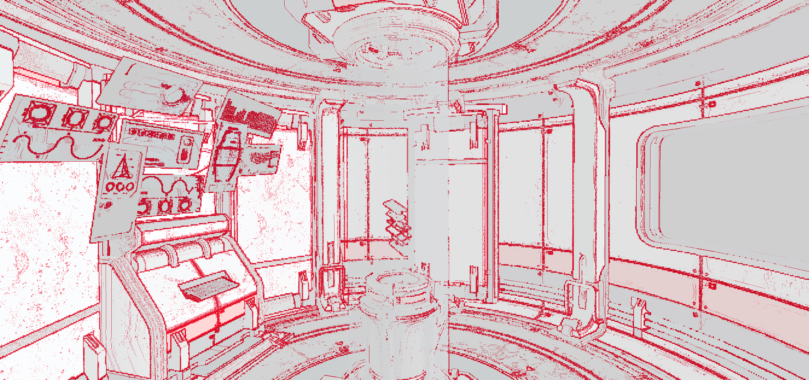

Image Compression Control
| The source for this sample can be found in the Khronos Vulkan samples github repository. |
Overview
This sample shows how a Vulkan application can control the compression of VkImage elements, in particular a framebuffer attachment and the swapchain.
This requires enabling and using the extensions VK_EXT_image_compression_control and VK_EXT_image_compression_control_swapchain, respectively.
Applications that use compression generally perform better thanks to the reduced memory footprint and bandwidth.
In this sample, the use-case is a simple post-processing effect (chromatic aberration) applied to the output color of the forward-rendering pass. Since the color output needs to be saved to main memory and read again by the post-processing pass, this an opportunity to improve performance by using image compression.
The sample allows toggling between:
The compression settings will be applied to both the color attachment and the swapchain, if the extensions are supported. The on-screen hardware counters show the impact each option has on bandwidth and on the memory footprint.

Sponza scene with default (lossless) compression
Default compression
This is lossless compression that devices can enable transparently to save performance where possible. Vulkan applications do not need to explicitly enable this sort of compression.
Devices with Arm GPUs implement Arm Frame Buffer Compression (AFBC), which uses variable bitrate encoding: the image is compressed in blocks (e.g. 4x4 pixels) and, depending on their composition, a different bitrate will be used. This means that the bandwidth savings depend on the image being compressed, and the compression ratio applied to each block. On average, high compression ratios are often obtained, as shown in the AFBC sample.
Fixed-rate compression
On the other hand, a compression scheme may use a constant bitrate for all blocks, and in this case the compression is defined as fixed-rate. This means that in some cases a block will lose some information, and thus the compression is lossy. Therefore the device cannot enable it automatically, and the developer must opt-in using the Vulkan image compression control extensions.
Recent devices with Arm GPUs support Arm Fixed Rate Compression (AFRC), which achieve high quality results even with the highest compression ratios. For instance, see below for images saved from a Pixel 8 device:
Default compression |
2BPC Fixed-rate compression |
Pixel difference |

|
Space Module scene compression comparison
Since the difference is not noticeable with the naked eye, this is sometimes referred to as "visually lossless" compression. Software like imagemagick allows to compare the images and obtain a PSNR quality estimation, in this case with the high value of 49.8dB:
$ magick compare -metric PSNR default.png fixed_rate_2BPC.png compare.png
49.8487 (0.498487)There are some performance benefits associated with fixed-rate compression, as described below.
Memory footprint savings
Images compressed with a fixed-rate will always consume less memory. In this case, an image compressed with a 2BPC bitrate results in a 65% reduction compared to uncompressed.
In this case, the slightly larger size of images compressed with AFBC is expected, as variable bitrates require enough space for the worse case (uncompressed) as well as some extra storage for compression-related metadata.
Bandwidth savings
The sample allows to observe an estimate of bytes being written out to main memory. On this device the write bandwidth difference between uncompressed and fixed-rate compression is approximately 38%:
Bandwidth savings coming from image compression depend on the pixels being compressed. Moving the camera and showing different distribution of colors in the frame changes the results. Be sure to profile your application and verify which compression scheme is optimal in each case. For instance, images with a high proportion of solid color (e.g. normals or material properties) may be more optimally compressed with variable bitrates than with fixed-rate. This is the case for the Space Module scene shown above.
VK_EXT_image_compression_control
This sample enables the VK_EXT_image_compression_control extension and requests the relevant device feature, imageCompressionControl
This extension abstracts how applications choose a fixed compression rate, in terms of "minimum number of bits per component (BPC)".
Query for image compression support
To query if a particular image supports fixed-rate compression, add a VkImageCompressionPropertiesEXT to the pNext chain of VkImageFormatProperties2, and call vkGetPhysicalDeviceImageFormatProperties2KHR:
VkImageCompressionPropertiesEXT supported_compression_properties{VK_STRUCTURE_TYPE_IMAGE_COMPRESSION_PROPERTIES_EXT};
VkImageCompressionControlEXT compression_control{VK_STRUCTURE_TYPE_IMAGE_COMPRESSION_CONTROL_EXT};
compression_control.flags = VK_IMAGE_COMPRESSION_FIXED_RATE_DEFAULT_EXT;
VkPhysicalDeviceImageFormatInfo2 image_format_info{VK_STRUCTURE_TYPE_PHYSICAL_DEVICE_IMAGE_FORMAT_INFO_2};
image_format_info.format = VK_FORMAT_R8G8B8_UNORM;
image_format_info.type = VK_IMAGE_TYPE_2D;
image_format_info.tiling = VK_IMAGE_TILING_OPTIMAL;
image_format_info.usage = VK_IMAGE_USAGE_COLOR_ATTACHMENT_BIT | VK_IMAGE_USAGE_SAMPLED_BIT;
image_format_info.pNext = &compression_control;
VkImageFormatProperties2 image_format_properties{VK_STRUCTURE_TYPE_IMAGE_FORMAT_PROPERTIES_2};
image_format_properties.pNext = &supported_compression_properties;
vkGetPhysicalDeviceImageFormatProperties2KHR(device.get_gpu().get_handle(), &image_format_info, &image_format_properties);In the Vulkan Samples framework, this happens in the vkb::query_supported_fixed_rate_compression function.
Then inspect the values written to the imageCompressionFixedRateFlags component of VkImageCompressionPropertiesEXT.
If fixed-rate compression is supported, the flags will indicate which levels may be selected for this image, for instance VK_IMAGE_COMPRESSION_FIXED_RATE_2BPC_BIT_EXT or VK_IMAGE_COMPRESSION_FIXED_RATE_5BPC_BIT_EXT.
The sample will use the minimum BPC available for its high compression setting, and the maximum BPC available for its low compression setting.
Fixed-rate options
Request image compression
To request fixed-rate compression, provide a VkImageCompressionControlEXT to the pNext chain of VkImageCreateInfo:
VkImageCompressionFixedRateFlagsEXT fixed_rate_flags_array[1] = {VK_IMAGE_COMPRESSION_FIXED_RATE_2BPC_BIT_EXT};
VkImageCompressionControlEXT compression_control{VK_STRUCTURE_TYPE_IMAGE_COMPRESSION_CONTROL_EXT};
compression_control.flags = VK_IMAGE_COMPRESSION_FIXED_RATE_EXPLICIT_EXT;
compression_control.compressionControlPlaneCount = 1;
compression_control.pFixedRateFlags = &fixed_rate_flags_array[0];
VkImageCreateInfo image_info{VK_STRUCTURE_TYPE_IMAGE_CREATE_INFO};
image_info.format = VK_FORMAT_R8G8B8_UNORM;
image_info.imageType = VK_IMAGE_TYPE_2D;
image_info.tiling = VK_IMAGE_TILING_OPTIMAL;
image_info.usage = VK_IMAGE_USAGE_COLOR_ATTACHMENT_BIT | VK_IMAGE_USAGE_SAMPLED_BIT;
image_info.pNext = &compression_control;
vkCreateImage(device, &image_info, nullptr, &new_image);Note that, instead of using VK_IMAGE_COMPRESSION_FIXED_RATE_EXPLICIT_EXT, one may use VK_IMAGE_COMPRESSION_FIXED_RATE_DEFAULT_EXT, and in that case it would not be necessary to provide a specific set of pFixedRateFlags.
In the Vulkan Samples framework, this happens in the core::Image constructor.
Verify image compression
To query which compression was applied, if any, once a VkImage has been created, add a VkImageCompressionPropertiesEXT to the pNext chain of VkImageSubresource2EXT, and call vkGetImageSubresourceLayout2EXT:
VkImageCompressionPropertiesEXT compression_properties{VK_STRUCTURE_TYPE_IMAGE_COMPRESSION_PROPERTIES_EXT};
VkSubresourceLayout2EXT subresource_layout{VK_STRUCTURE_TYPE_SUBRESOURCE_LAYOUT_2_KHR};
subresource_layout.pNext = &compression_properties;
VkImageSubresource2EXT image_subresource{VK_STRUCTURE_TYPE_IMAGE_SUBRESOURCE_2_KHR};
image_subresource.imageSubresource.aspectMask = VK_IMAGE_ASPECT_COLOR_BIT;
image_subresource.imageSubresource.mipLevel = 0;
image_subresource.imageSubresource.arrayLayer = 0;
vkGetImageSubresourceLayout2EXT(device, image, &image_subresource, &subresource_layout);Then inspect the values written to the imageCompressionFlags and imageCompressionFixedRateFlags components of VkImageCompressionPropertiesEXT.
In the Vulkan Samples framework, this happens in the core::Image::query_applied_compression function.
VK_EXT_image_compression_control_swapchain
Compression control for swapchain images is similar, but it requires the VK_EXT_image_compression_control_swapchain extension and the imageCompressionControlSwapchain device feature to be enabled.
These depend on the VK_EXT_image_compression_control being available and enabled too.
Query for surface compression support
To query if the surface supports fixed-rate compression, add a VkImageCompressionPropertiesEXT to the pNext chain of VkImageFormatProperties2, and call vkGetPhysicalDeviceImageFormatProperties2KHR:
VkPhysicalDeviceSurfaceInfo2KHR surface_info{VK_STRUCTURE_TYPE_PHYSICAL_DEVICE_SURFACE_INFO_2_KHR};
surface_info.surface = surface;
uint32_t surface_format_count{0U};
vkGetPhysicalDeviceSurfaceFormats2KHR(device, &surface_info, &surface_format_count, nullptr);
std::vector<VkSurfaceFormat2KHR> surface_formats;
surface_formats.resize(surface_format_count, {VK_STRUCTURE_TYPE_SURFACE_FORMAT_2_KHR});
std::vector<VkImageCompressionPropertiesEXT> compression_properties;
compression_properties.resize(surface_format_count, {VK_STRUCTURE_TYPE_IMAGE_COMPRESSION_PROPERTIES_EXT});
for (uint32_t i = 0; i < surface_format_count; i++)
{
surface_formats[i].pNext = &compression_properties[i];
}
vkGetPhysicalDeviceSurfaceFormats2KHR(device, &surface_info, &surface_format_count, surface_formats.data());Then inspect the values written to the imageCompressionFixedRateFlags component of VkImageCompressionPropertiesEXT, associated to a particular VkSurfaceFormat2KHR.
In the Vulkan Samples framework, this happens in the Swapchain::query_supported_fixed_rate_compression function.
Request surface compression
To request fixed-rate compression, provide a VkImageCompressionControlEXT to the pNext chain of VkSwapchainCreateInfoKHR:
VkImageCompressionFixedRateFlagsEXT fixed_rate_flags_array[1] = {VK_IMAGE_COMPRESSION_FIXED_RATE_2BPC_BIT_EXT};
VkImageCompressionControlEXT compression_control{VK_STRUCTURE_TYPE_IMAGE_COMPRESSION_CONTROL_EXT};
compression_control.flags = VK_IMAGE_COMPRESSION_FIXED_RATE_EXPLICIT_EXT;
compression_control.compressionControlPlaneCount = 1;
compression_control.pFixedRateFlags = &fixed_rate_flags_array[0];
VkSwapchainCreateInfoKHR create_info{VK_STRUCTURE_TYPE_SWAPCHAIN_CREATE_INFO_KHR};
create_info.surface = surface;
create_info.pNext = &compression_control;
vkCreateSwapchainKHR(device, &create_info, nullptr, &new_swapchain);Similarly to regular images, VK_IMAGE_COMPRESSION_FIXED_RATE_DEFAULT_EXT may be used instead.
In the Vulkan Samples framework, this happens in the Swapchain constructor.
Verify surface compression
To verify that compression was applied to the swapchain images, use the same method as described for a regular VkImage in Verify image compression.
No need to enable VK_EXT_image_compression_control_swapchain for this.
In the Vulkan Samples framework, this happens in the Swapchain::get_applied_compression function.
Note that even if the surface supports fixed-rate compression and the extensions are enabled, the surface might not be compressed. The most likely reason is that, even though the GPU supports it, other IP components in the system (e.g. the Display) do not support it, and therefore images are not compressed.
Disabling fixed-rate compression
As explained above, the flags in VkImageCompressionControlEXT control the compression scheme selection for images.
Take care not to accidentally disable Default compression when disabling Fixed-rate compression.
That is, ensure that VK_IMAGE_COMPRESSION_DEFAULT_EXT is used by default, rather than VK_IMAGE_COMPRESSION_DISABLED_EXT, which disables all compression, negatively impacting performance.
Conclusion
VK_EXT_image_compression_control allows applications to check if default compression is enabled.
It also provides the mechanism to request lossy (fixed-rate) compression where appropriate (VK_EXT_image_compression_control_swapchain is required for swapchain images).
Fixed-rate compression guarantees the most efficient memory footprint and can result in substantially reduced memory bandwidth, without sacrificing image quality. Bandwidth reductions can in turn result in performance improvements and power savings.